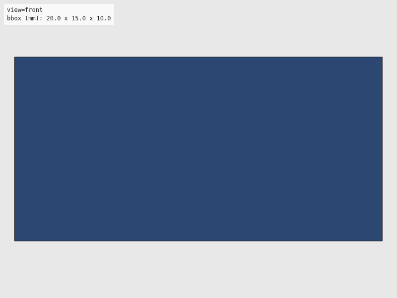
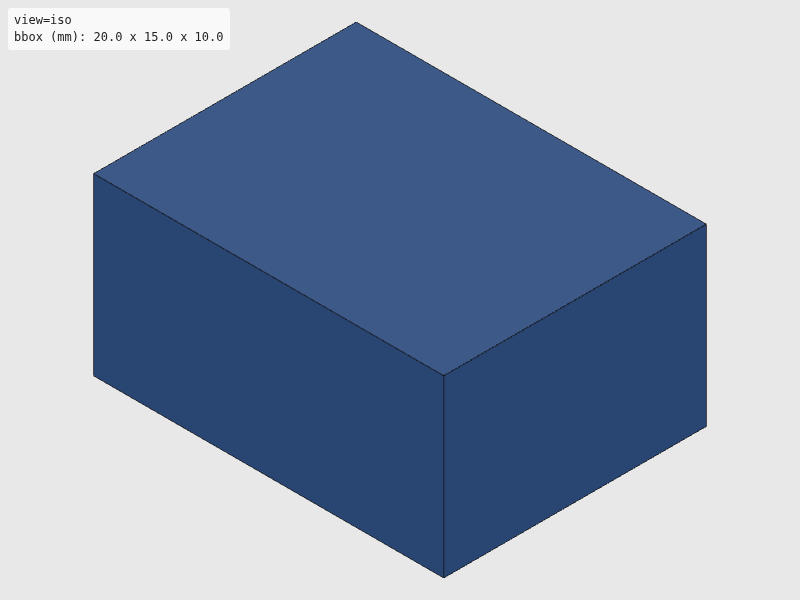
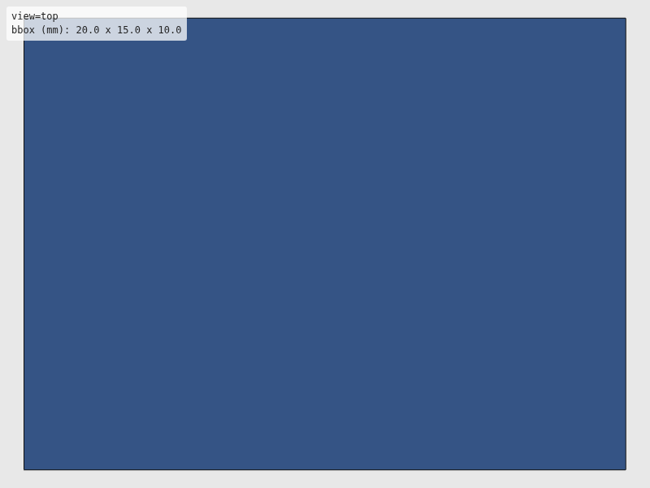
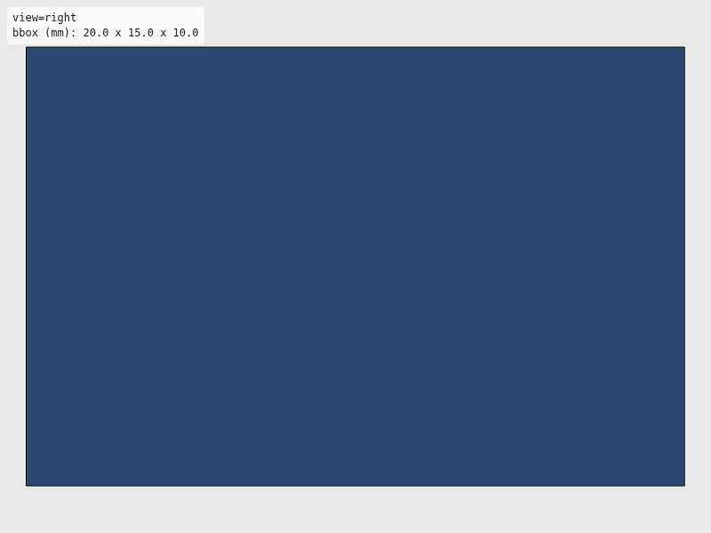

Verdict: review
Green is necessary, not sufficient: these checks cannot see local defects. Look at the render and decide.




The intent as written, for comparison with the renders. Not checked.
"""Generate the committed STL fixtures used by `tests/verify/test_preflight.py`.
Run once, not part of CI or `make validate` (committed STLs are the artifact; this
script is how they were produced, for reproducibility):
UV_PROJECT_ENVIRONMENT=/tmp/claude-1000/venv-wave1-preflight uv sync --extra cad
UV_PROJECT_ENVIRONMENT=/tmp/claude-1000/venv-wave1-preflight uv run \
python tests/fixtures/make_fixtures.py
Only the headline feature-absorbed pair needs `build123d` (the `cad` extra); the
other three fixtures are built directly from `trimesh` primitives so most of this
script runs with the core dependency alone.
"""
from pathlib import Path
import trimesh
FIXTURES = Path(__file__).parent
GOOD_EXTENTS = (20.0, 15.0, 10.0)
OVERSIZE_EXTENTS = (60.0, 60.0, 60.0)
PLATE_SIZE = (40.0, 40.0, 5.0)
BOSS_RADIUS = 5.0
BOSS_HEIGHT = 8.0
BOSS_SINK_MM = 3.0 # how far the buggy boss sinks into the plate
def make_good() -> None:
"""Export a simple closed box: passes every preflight check with matching bounds."""
box = trimesh.creation.box(extents=GOOD_EXTENTS)
box.export(FIXTURES / "good.stl", file_type="stl")
def make_oversize() -> None:
"""Export a box larger than any sensible envelope: fails the bbox check."""
box = trimesh.creation.box(extents=OVERSIZE_EXTENTS)
box.export(FIXTURES / "oversize.stl", file_type="stl")
def make_non_manifold() -> None:
"""Export a box with one face deleted: an unavoidable hole, fails `watertight`.
Dropping a face (not merging/adding vertices) removes a triangle that two
edges relied on, so the mesh cannot be watertight no matter how loading
merges coincident vertices afterwards.
"""
box = trimesh.creation.box(extents=GOOD_EXTENTS)
keep = [True] * (len(box.faces) - 1) + [False]
box.update_faces(keep)
box.export(FIXTURES / "non_manifold.stl", file_type="stl")
def make_feature_absorbed() -> None:
"""Export the headline silent-boolean-fusion-loss pair via build123d.
Intended: a plate with a boss sitting flush on top (boss fully additive,
zero overlap). Buggy: the same boss sunk `BOSS_SINK_MM` into the plate, so
that slice of the boss is silently absorbed during the fuse. Both solids
stay watertight; only the volume differs — the one defect this preflight
is built to catch (plan `docs/plans/001-v0.md` §7.3).
"""
from build123d import Box as B123Box
from build123d import Cylinder, Pos, export_stl
plate = B123Box(*PLATE_SIZE)
boss = Cylinder(radius=BOSS_RADIUS, height=BOSS_HEIGHT)
plate_top = PLATE_SIZE[2] / 2
boss_half = BOSS_HEIGHT / 2
flush_z = plate_top + boss_half # boss bottom lands exactly on the plate top
sunk_z = flush_z - BOSS_SINK_MM # boss bottom lands BOSS_SINK_MM below the plate top
intended = plate + Pos(0, 0, flush_z) * boss
buggy = plate + Pos(0, 0, sunk_z) * boss
intended_path = FIXTURES / "feature_absorbed_intended.stl"
buggy_path = FIXTURES / "feature_absorbed_buggy.stl"
export_stl(intended, str(intended_path))
export_stl(buggy, str(buggy_path))
intended_mesh = trimesh.load(intended_path)
buggy_mesh = trimesh.load(buggy_path)
print(f"intended: watertight={intended_mesh.is_watertight} volume={intended_mesh.volume:.3f}")
print(f"buggy: watertight={buggy_mesh.is_watertight} volume={buggy_mesh.volume:.3f}")
print(
"relative volume shift: "
f"{abs(intended_mesh.volume - buggy_mesh.volume) / intended_mesh.volume:.4%}"
)
if __name__ == "__main__":
make_good()
make_oversize()
make_non_manifold()
make_feature_absorbed()
print("fixtures written to", FIXTURES)
| Check | Status | Detail |
|---|---|---|
| file_integrity | PASS | binary STL: header present, 12 triangles, file length matches 84 + 50*n |
| watertight | PASS | watertight=True, winding_consistent=True, euler_number=2 (reported only, not asserted — plan §7.2) |
| bbox | PASS | extents=(20.0, 15.0, 10.0), envelope=(21.0, 16.0, 11.0) |
| volume | PASS | volume=3000.0, band=[2990.0, 3010.0] |
| browser_load | PASS | viewer reported body[data-state]=rendered |
| render | PASS | 4 view(s) captured at 800x600 |